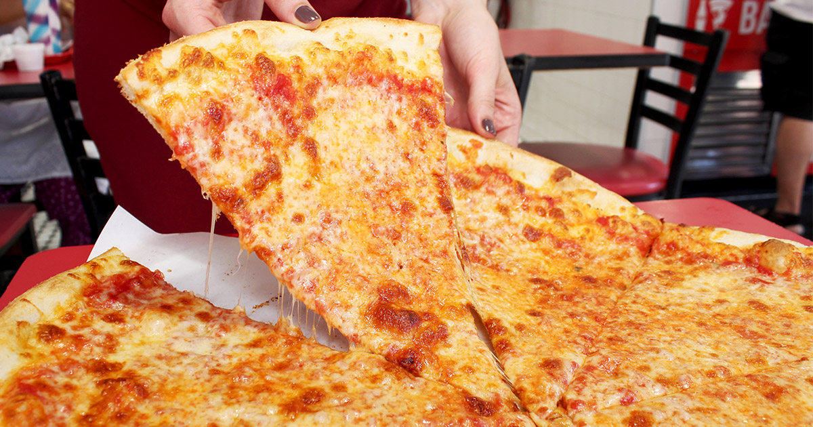

New York Style Pizza
New York-style pizza is beloved everywhere for its thin crust, balanced sauce
and ample cheese. On average, an NY pizza measures roughlt 18 inches
in diameter, making it the ideal meal for large groups of pizza lovers.

What Makes a NY Style Slice?
Although different pizzerias use slightly different techniques
and ingredients,
some characteristics are in common for every New York-style pizza:
- The dough for the NY-style pies is prepared with
bread flour or any other
high-gluten type of flour. It is mixed with water
and yeast and is left to rise and ferment for more
than 24 hours.Afterward, it is hand-tossed by savvy pizzailolos
- The sauce is made of cooked tomatoes, garlic, olive oil, salt,
sugar, and herbs like oregano and basil, creating a bit sweet
and tangy tomato sauce. It gets spread evenly but sparingly, because
no one likes a soggy crust.
- The cheese used for NY-style pizza is grated full-fat
mozzarella. However, Pizzerias use low-moisture mozzarella,
avoiding the risk of unwanted soggy crust.
- The condiments typically used on pies are dried or fresh oregano
and basil, chilli flakes, fresh garlic or garlic powder,
and grated parmesan cheese.
One slice of NY-style pizza can have around 200 calories.
Return Home